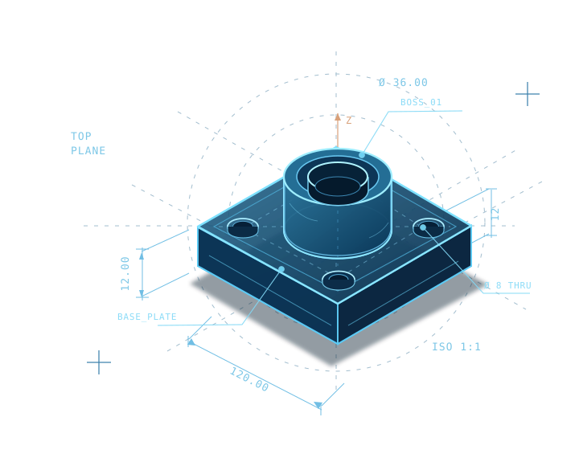
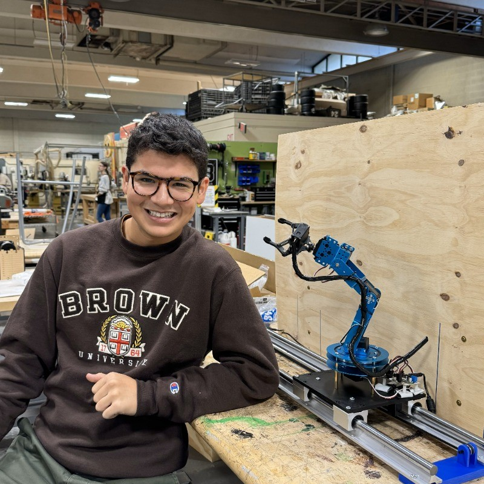

Units and drawing exports
Equivalent geometry was verified across the tested native unit settings. A4 and A3 drawing cases passed fitted-title, saved/reopened, PDF and DXF review.
Describe a part or a drawing task. Gage works through Codex in local SOLIDWORKS, with editable files and results you can inspect. Currently an unsigned development preview.
Start with a real task.
Demo requests are arranged by email. No booking is confirmed here.

“Create a mounting bracket with four bolt holes.”
These are software test results for this development snapshot, not engineering certification or a production-readiness claim.
Equivalent geometry was verified across the tested native unit settings. A4 and A3 drawing cases passed fitted-title, saved/reopened, PDF and DXF review.
Detail-view labels and positions, plus selected nested-assembly paths, have bounded test coverage. Native checks cover shared-part BOM grouping and mass checks, not general assembly qualification.
Simulation is not yet qualified or available while a native crash is being resolved. Gage is not production-ready software; broader native validation remains in progress.
Start with a small CAD task. Review the geometry, saved files and exports before using the result.
Describe a component, then inspect its sketches, dimensions and features in SOLIDWORKS. The model stays editable.
Selected nested-assembly paths have test coverage. Native checks cover shared-part BOM grouping and mass; each design still needs review in SOLIDWORKS.
Study setup and result review are areas of ongoing work. The visual shows the intended workflow.
ⓘ CAD and simulation operations require compatible local software and licenses. Review the proposed operation and its result in your CAD environment.
Explore the intended steps for a few common tasks. These are interactive illustrations, not live CAD commands.
“Create a 100 × 60 mm base plate with four mounting holes.”
A closer look at the development build. Select a capture to open the complete, original-size image.
Gage brings a Codex-driven workflow to a local SOLIDWORKS setup. Inspect models in SOLIDWORKS and review the scope of each operation before relying on the result.
How does usage work? ↗Gage uses Codex usage. A normal ChatGPT conversation does not provide unlimited CAD automation.
Work with an existing compatible installation and the licenses required by the workflow. Inspect generated models in your CAD environment.
Your workflow. Account sign-in belongs in the supported Codex flow. This website does not collect AI credentials or execute CAD commands.
The next steps are specific: resolve blockers, repeat native checks, and test a small number of real workflows. No launch date is promised.
The current snapshot passes 7,149 Python tests (9 skipped) and 848 panel tests. Native checks cover specific unit and drawing cases.
Preparing focused testing with engineers, students, and technical designers. Share the workflow you would like to evaluate.
Complete native study validation, expand source-preservation checks, and test more real workflows before widening access.
Request a walkthrough or tell us what you would like to test. A few details help us prepare something relevant to your work.
Schedule a demo by requesting a time over email. This form does not reserve a calendar slot.
I’m Andrew Mombay, the founder and developer of Gage. I study Mechanical Engineering (B.Sc.) and Business Economics (B.A.) at Brown University, and hold an Associate of Arts and Sciences from Carroll Community College.
I’m an Industrial Digital Strategist Intern at Siemens Digital Industries Software and Co-Founder & CEO of Vastro, where I work on VR-controlled robotics. Gage brings those interests in mechanical design, software, and product development into a tool I use and test in SOLIDWORKS.
Gage is an independent project. These education and employment details do not imply endorsement by Brown University, Siemens or Carroll Community College.
View Andrew’s LinkedIn profile
Founder & developer, Gage
The practical details behind Gage, its capabilities, and our approach to AI integration.
Gage is an independent AI CAD agent project built by engineers for engineers. Its aim is to translate natural-language design intent into real CAD operations—from parts and assemblies to supported simulation workflows.
Part creation and editing are core development priorities. The goal is for the agent to create sketches and parametric features, change dimensions, and build editable parts inside the connected CAD application. Exact commands and availability depend on the version being tested.
Assembly creation is a target workflow: bringing components together, placing them, applying compatible mates or constraints, and iterating on an assembled design. It is not being advertised as a generally available public feature yet.
Simulation is in development and is not currently offered as a qualified workflow. See the current status above for availability. Existing benchmark captures show specific development cases.
Gage uses Codex usage. Your normal ChatGPT conversations do not provide unlimited CAD automation. Access and usage limits follow your configured Codex workflow. This website has no account sign-in and does not collect AI credentials.
Gage is MIT open source and the current preview is unsigned. The October 18 snapshot reports 7,149 Python tests passed (9 skipped) and 848 panel tests passed. These checks are not engineering certification. Specific native unit, A4/A3 drawing and export cases passed; broader native qualification remains pending. Use copies of your designs for preview testing. Source-file preservation is still being validated.
Gage is being developed with SOLIDWORKS-oriented workflows first. Broader CAD support is a possible future direction, but no additional compatibility has been announced.
No. The goal is to offload repetitive modeling and study-setup tasks while keeping engineering decisions, reviews, and verification with a human. Generated geometry and simulation outputs must be checked before use.
Complete the early access request and share the CAD tools or workflows you're interested in. Gage is still in development; interest does not guarantee selection or a launch date.
No. Gage is an independent project and is not sponsored by, endorsed by, or affiliated with OpenAI, Dassault Systèmes, or SOLIDWORKS. Product and brand names are used only to describe possible technical integrations.
Ask for a walkthrough, share a workflow to test, or send a question. Demo times are agreed by email.